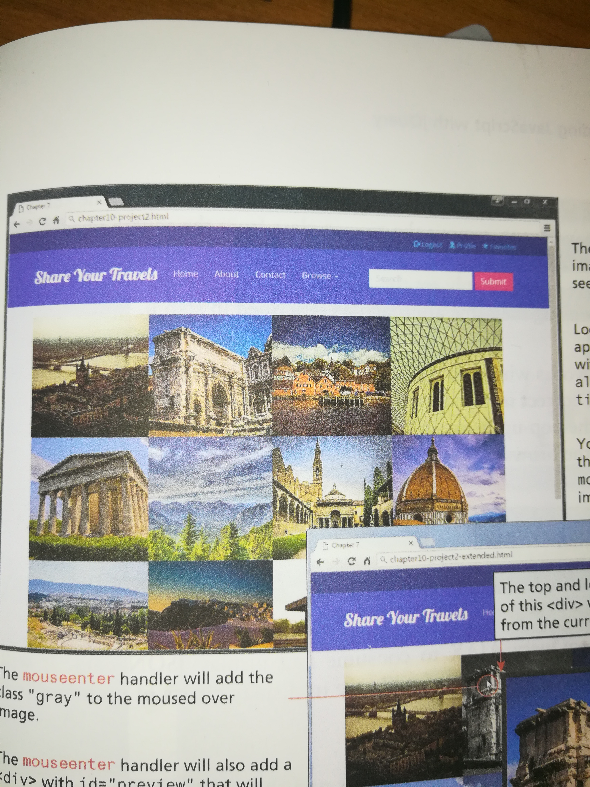

The assignment instructions were to build the central web of images entirely with jquery and to implement functions to fade the image hovered over and display a larger version of it.
Below is the reference image. I had to use other images since I did not have access to the repository.
